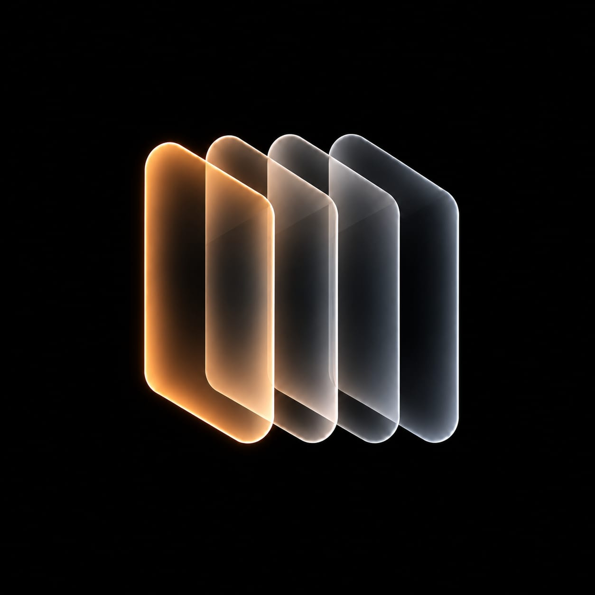

Sua biblioteca, do seu jeito
Importe PDFs de até 200 MB. Organize em pastas e categorias e encontre documentos pelo título.

ODMANIComo instalar ↗Seu tempo. Suas páginas.
Um espaço para seus PDFs. Abra uma história, organize suas ideias e continue de onde parou. Mesmo sem internet.
Baixar ODMANI para AndroidUMA PÁGINA DE CADA VEZ
Um lugar para ler com calma
ODMANI é um leitor Android nativo. A interface permanece em tons de cinza, com temas claro e escuro para acompanhar seu momento.
Importe PDFs de até 200 MB. Organize em pastas e categorias e encontre documentos pelo título.
Posição salva, zoom, rotação e ajuste de visualização. Os PDFs mantêm a diagramação original.
Acompanhe o tempo de leitura e o mapa de intensidade por dia, semana, mês ou ano.
Do download à primeira leitura
A instalação é pelo arquivo APK, diretamente no Android.
Esta atualização muda a identidade do aplicativo nativo para ODMANI e aplica o ícone enviado pelo responsável pelo projeto. Os dados da alpha nativa anterior são preservados na atualização. A instalação de versões híbridas é independente.
Compilação e testes automatizados verificados. A validação física no Moto G84 continua necessária. Ainda sem anotações, OCR, sincronização, busca dentro do PDF ou leitura de PDFs protegidos por senha. Desinstalar apaga as cópias e os dados locais.
SHA-256 do instalador:8dff94cf0e86f711532ac42638f1419eb1c83dfa82d55d1f4809309df35b574f